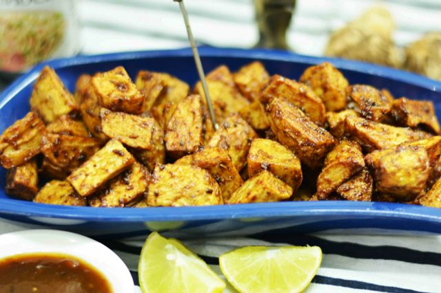

It is a winter special street food in Indore
and is found in almost all local food stalls across the city.
It is a variety of Yam and is considered as one of the tastiest winter
delicacies in Indore. Here, the root is chopped and fried twice before
being tossed (saute) in spices and lime juice. This crispy and spicy snack
during the cold winter season is capable of giving any potato wedge a run for its money.
Cost for two- Rs 80 (approx.)